OMOP CDM and Standardized Vocabularies
Biostat 218
2024-12-30
Introduction
In these lectures we will learn:
What are standard / common data models?
Why an OMOP CDM?
How is the OMOP CDM normalized?
About using standardized vocabularies
How to get observations into standard models
Data models are everywhere
\(\ldots\) but mostly implicit
Purpose
To build software
To share data
Attributes
Relational models
Normalized models
Closed-world models
What makes a model standard?
Data models
Software controls the data
Value of software \(\gg\) data
Data come to the software
Standard data models
Data are independent
Value of data \(\gg\) software
Software comes to the data
What makes a model standard?
Data models
Specific business process
Implicit in application
No name
Not or internally documented
Support as part of application
One stakeholder: vendor
Standard data models
Broad set of use cases
Explicit, independent of one application
Branded
Thoroughly documented
Independently supported
Many stakeholders
Examples of data models in healthcare
Data models
Standard data models
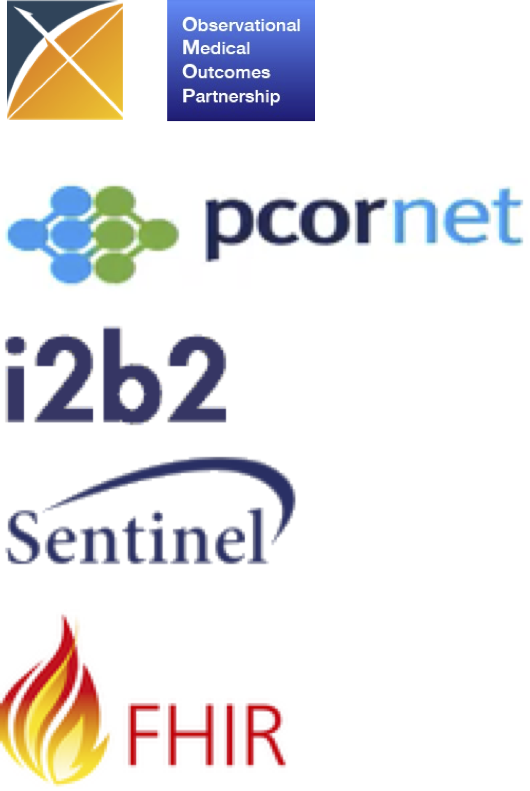
- only one is global, and a super-set of several others
Added value of standard data models
Data models
Objects
Relationship
Standard data models
Objects
Relationship
Context
Conventions
Training
Test cases
Standard data models provide interoperability

Formal logic in knowledge representation
Open-world assumption
What we know \(\ldots\) is true
What we don’t know \(\ldots\) we don’t know
Closed-world assumption
What we know \(\ldots\) is true
What we don’t know \(\ldots\) is false
What does it mean “what we don’t know?”
Real-world data are closed-world
For any given day:
- If we see a record of something, it happened
- If we don’t see a record of something, it did not happen
which imples
- We must know everything that could happen for (2) to hold
- Everything we want to record must be in a reference table:
- all drugs, conditions, procedures, devices, visits, etc
Only the closed-world assumption allows analytics
Incidence (how many patients get a disease in a time-period over all patients)
Prevalence (how many patients have a disease at a time-point over all patients)
All prediction / epidemiological methods
Why an OMOP standard / common data model?
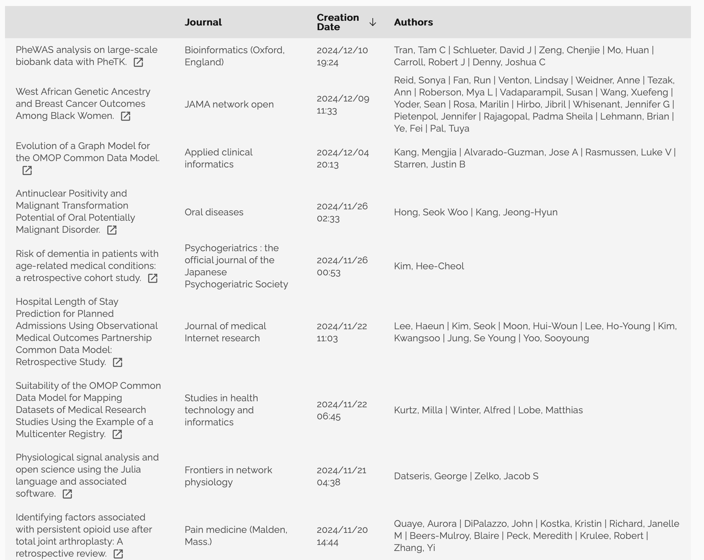
OMOP CDM
The OMOP CDM is a system of
- tables
- conventions, and
- vocabularies
that allow observational health data to be standardized.
It is this standard approach that facilitaties rapid innovation in the areas of open-source development, methods research and evidence generation.
Tables
The OMOP CDM is a person-centric model
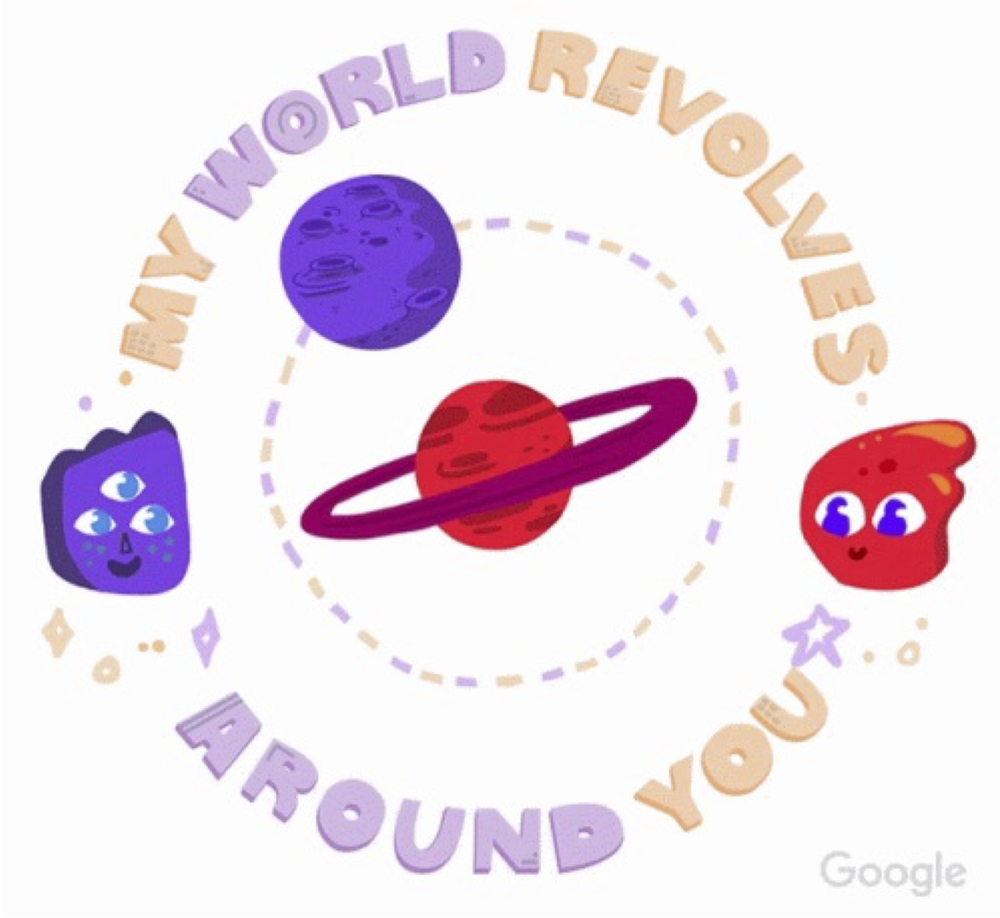Tables
A typical patient journey within a healthcare system
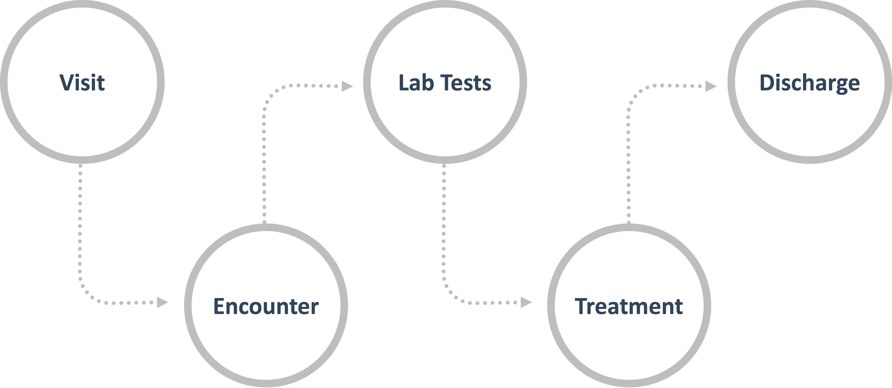Tables
A typical patient journey within a healthcare system into data
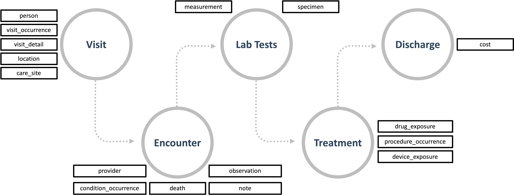Tables
A typical patient journey within a healthcare system into data
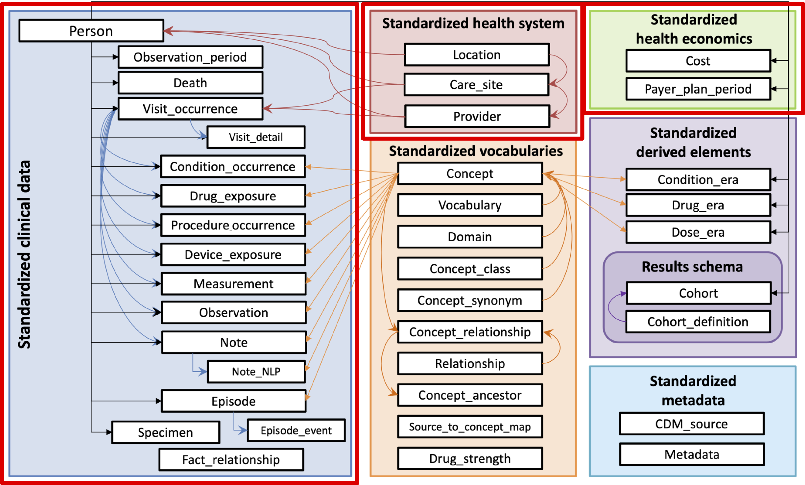
All clinical event tables are linked to the PERSON table. Adding the date or start-date to events allows for a longitudinal view on all relevant events by person.
- Exception: standardized health system data tables
Simple data model
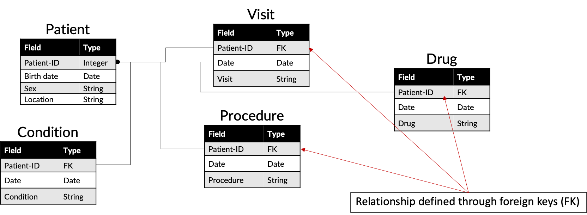Schemas and data tables
Database schema separate between read-only and read-write tables
CDM
- Clinical event tables
- Vocabulary tables
Results
COHORT(basis of analysis)COHORT_DEFINITION
The CDM is platform-independent. Data types are basic ANSI SQL
VARCHAR,BIGINT,INTEGER,FLOAT,DATA,DATATIME,CLOB
Events of different nature organize into domains
Events are stored in domain-specific tables and represented by standard concepts
- Condition domain
- signs, symptoms, diagnoses
CONDITION_OCCURRENCEtable
- Drug domain
DRUG_EXPOSUREtable
Semantic representation through concepts
Each record is fully normalized through concepts
- Unique
CONCEPT_IDvalues (foreign keys toCONCEPTtable)
All CDM instances use the same CONCEPT table as a reference
- Chief mechanism of interoperability
If a standard concept does not exist (or cannot be identified) CONCEPT_ID = 0
Normalization in pictures
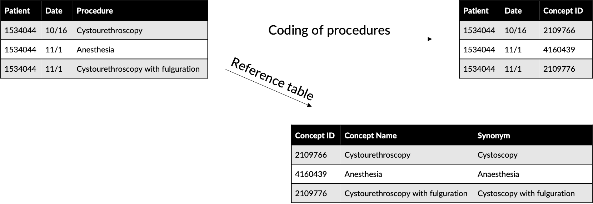- Importance becomes (even more) obvious across data sources (language, coding systems)
Field name conventions
| Notation | Description |
|---|---|
| [Event]_ID | Unique identifier for each record, which serves as a foreign keys establishing relationships across Event tables. For example, PERSON_ID uniquely identifies each individual. VISIT_OCCURRENCE_ID uniquely identifies a Visit. |
| [Event]_CONCEPT_ID | Foreign key to a Standard Concept record in the CONCEPT reference table. This is the main representation of the Event, serving as the primary basis for all standardized analytics. For example, CONDITION_CONCEPT_ID = 31967 contains the reference value for the SNOMED concept of “Nausea”. |
| [Event]_SOURCE _CONCEPT_ID | Foreign key to a record in the CONCEPT reference table. This Concept is the equivalent of the Source Value (below), and it may happen to be a Standard Concept, at which point it would be identical to the [Event]_CONCEPT_ID, or another non-standard concept. For example, CONDITION_SOURCE_CONCEPT_ID = 45431665 denotes the concept of “Nausea” in the Read terminology, and the analogous CONDITION_CONCEPT_ID is the Standard SNOMED-CT Concept 31967. The use of Source Concepts for standard analytics applications is discouraged since only Standard Concepts represent the semantic content of an Event in a unambiguous way and therefore Source Concepts are not interoperable. |
| [Event]_TYPE_CONCEPT_ID | Foreign key to a record in the CONCEPT reference table, representing the origin of the source information, standardized within the Standardized Vocabularies. Note that despite the field name this is not a type of an Event, or type of a Concept, but declares the capture mechanism that created this record. For example, DRUG_TYPE_CONCEPT_ID discriminates if a Drug record was derived from a dispensing Event in the pharmacy (“Pharmacy dispensing”) or from an e-prescribing application (“Prescription written”) |
| [Event]_SOURCE_VALUE | Verbatim code or free text string reflecting how this Event was represented in the source data. Its use is discouraged for standard analytics applications, as these Source Values are not harmonized across data sources. For example, CONDITION_SOURCE_VALUE might contain a record of “78702”, corresponding to ICD-9 code 787.02 written in a notation omitting the dot. |
Explore the CDM
OMOP CDM v5.4 schema (link)
OMOP CDM v5.4 DDL (link)
Data definition language (DDL)
Database constraints
NOT NULL: must have a valueUNIQUE KEY: value must only exist once in tablePRIMARY KEY:NOT NULL+UNIQUE KEYFOREIGN KEY: must have a value in a parent table / fieldCHECK: must check out (e.g. is positive)
OMOP CDM v5.4 constraints (link)
OMOP CDM
The OMOP CDM is a system of
- tables
- conventions, and
- vocabularies
that allow observational health data to be standardized.
It is this standard approach that facilitaties rapid innovation in the areas of open-source development, methods research and evidence generation.
Conventions
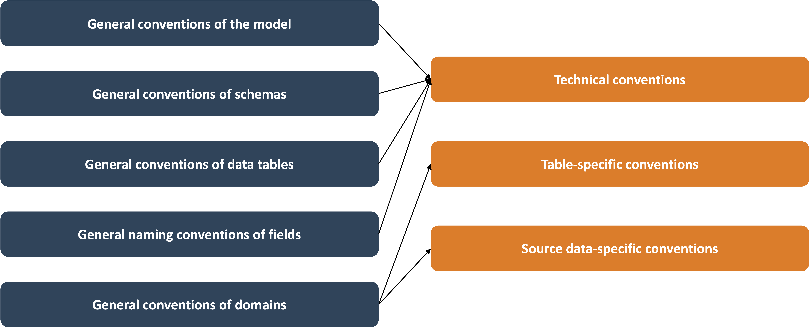Technical conventions
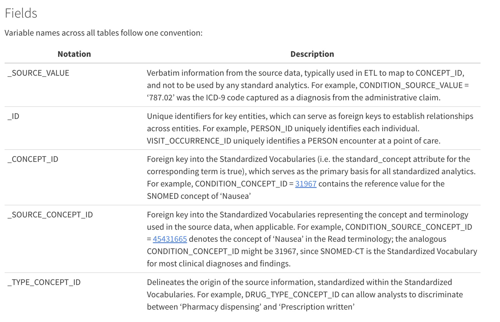OMOP CDM v5.4 conventions (link)
Table-specific conventions
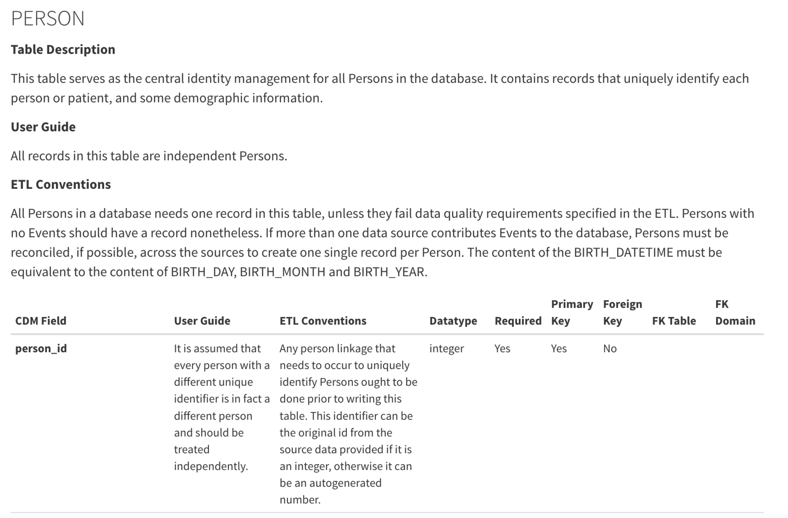Source data-specific conventions
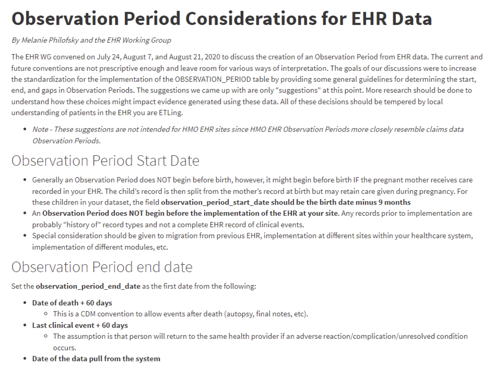OMOP CDM
The OMOP CDM is a system of
- tables
- conventions, and
- vocabularies
that allow observational health data to be standardized.
It is this standard approach that facilitaties rapid innovation in the areas of open-source development, methods research and evidence generation.
Vocabularies

Why do we need standard concepts?
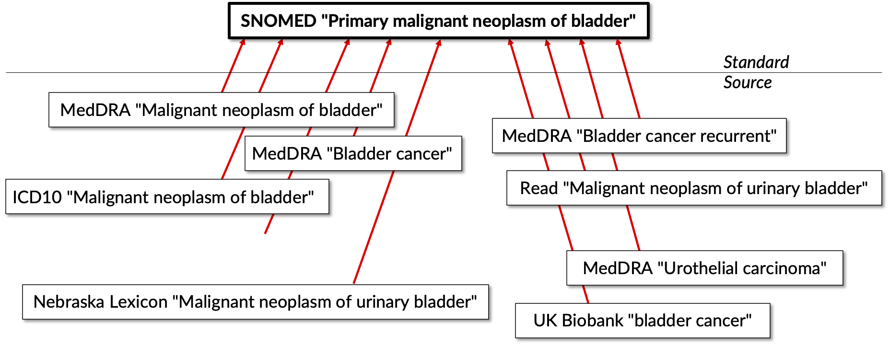OMOP standardized vocabularies
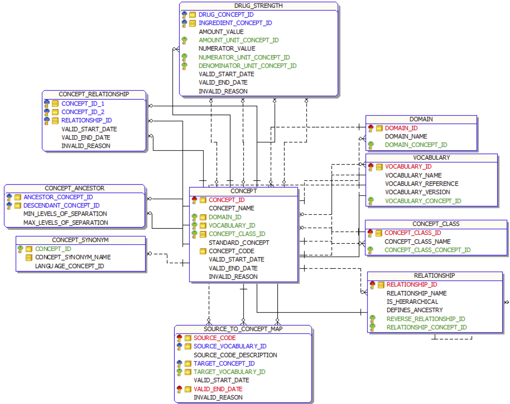Example DDL diagram
Example concept

Vocabularies relate ideas (concepts)
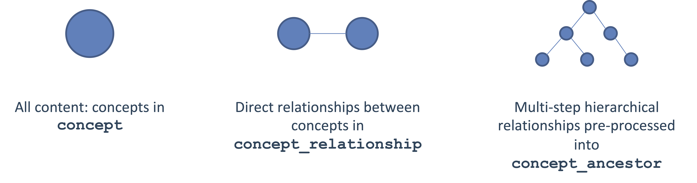A semantic concept is a concept that is represented in a network of interconnected concepts
Mapping to OMOP standardized vocabularies
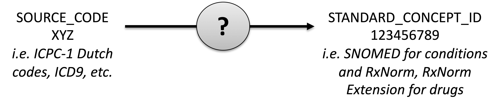What is standardized:
[TABLE]_CONCEPT_ID: standard concept to which the source code maps, used for analysis[TABLE]_SOURCE_CONCEPT_ID: concept representation of the source code, helps maintain tie to raw data[TABLE]_SOURCE_VALUE: original source code as given in source table, helps to review data quality
Way to get a source code to standard code:
CONCEPT_RELATIONSHIPtable
How many concepts are in the OHDSI standard vocabularies?
1-to-1 semantic relationships
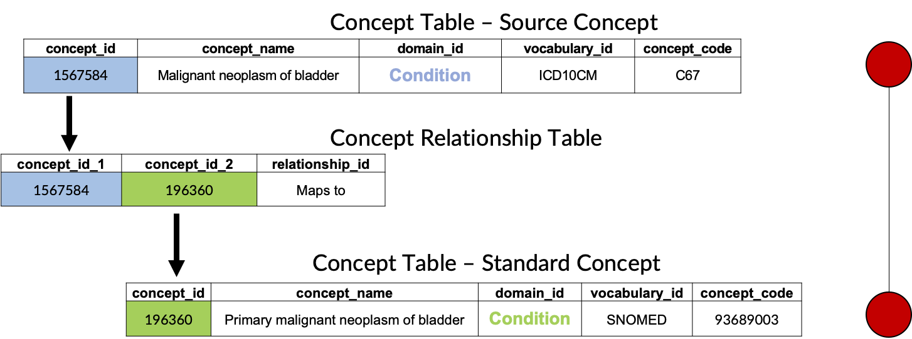1-to-N relationships
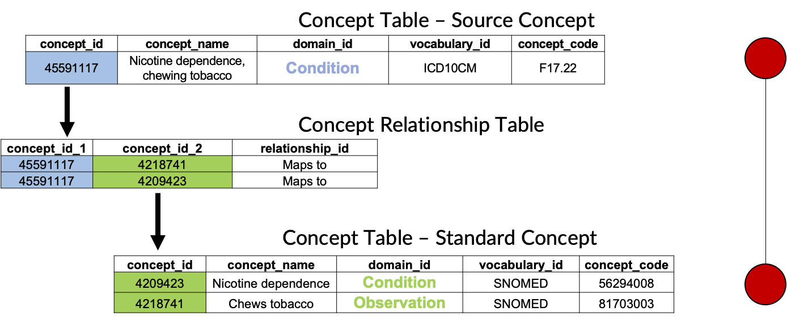Mappings can even across multiple domains
OMOP standardized vocabularies in a nutshell
What they are:
- Standardized structure to house existing vocabularies used in the public domain
- Compiled standards from disparate public and private sources and some OMOP-grown concepts
What they are not:
- Static dataset: vocabularies update regularly to keep up with the continuous evolution of the sources
- Finished product: vocabulary maintenance and improvement is an ongoing activity that requires community participation and support
Extended CDM example: endometriosis
We will walk through the story of Lauren:
- From the Book of OHDSI (link)
Vocabulary exercises
Using https://athena.ohdsi.org, find standard concept IDs for the following conditions:
- Asthma
- Plague
- Ingrown toenail
Final standard concept IDs for the following drug ingredients:
- Metformin
- Tolazamid
- Telmisartan
Vocabulary exercises (with solutions)
Using https://athena.ohdsi.org, find standard concept IDs for the following conditions:
- Asthma (
317009) - Plague (
434271) - Ingrown toenail (
4065236,4290993)
Final standard concept IDs for the following drug ingredients:
- Metformin (
1503297) - Tolazamid (
1502809) - Telmisartan (
1317640)
Some more exercises
What is the standard concept ID for ICD10 code E11.9?
What is the standard concept ID for the ICD10 code C78.0?
What ICD10 codes are mapped to the concept ID 443767?
What is the standard concept ID for the ICD10 code code X67.0?
Comparison of CDMs
Balancing trade-offs in data management vs analysis complexity
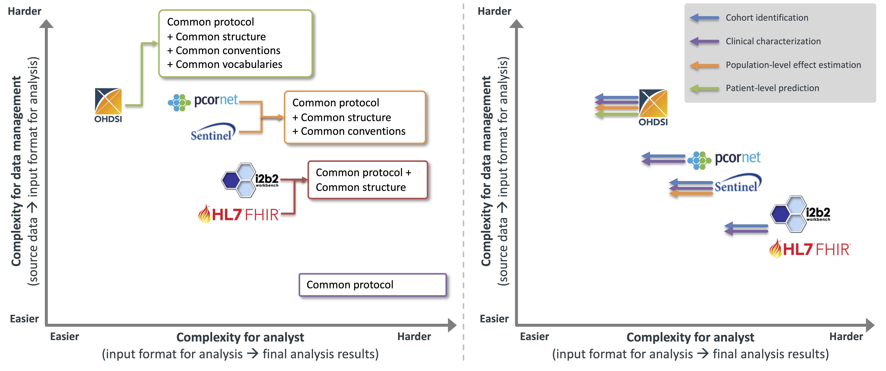Extract-transform-load
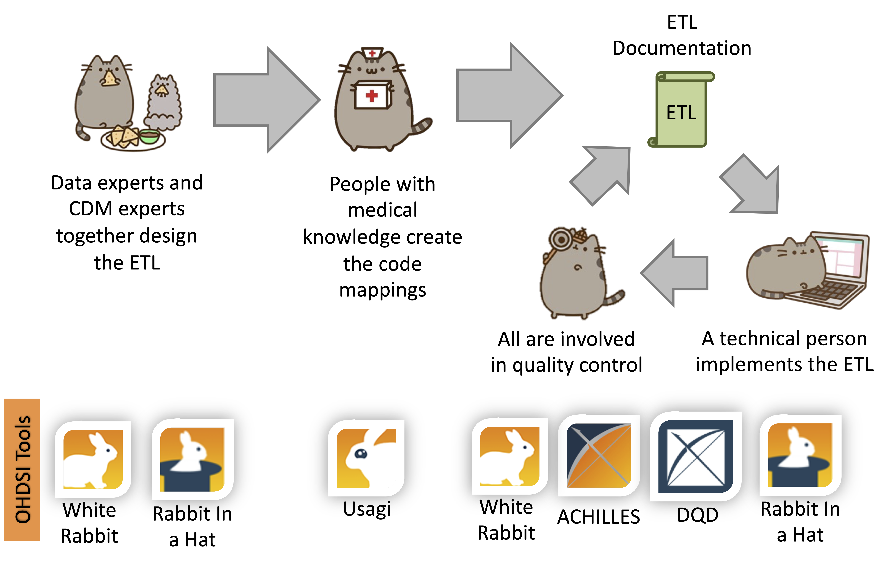
Book of OHDSI chapter (link)
Full-day tutorial (link)

Biostat 218 - UCLA - Observational Health Data Sciences and Informatics (OHDSI)